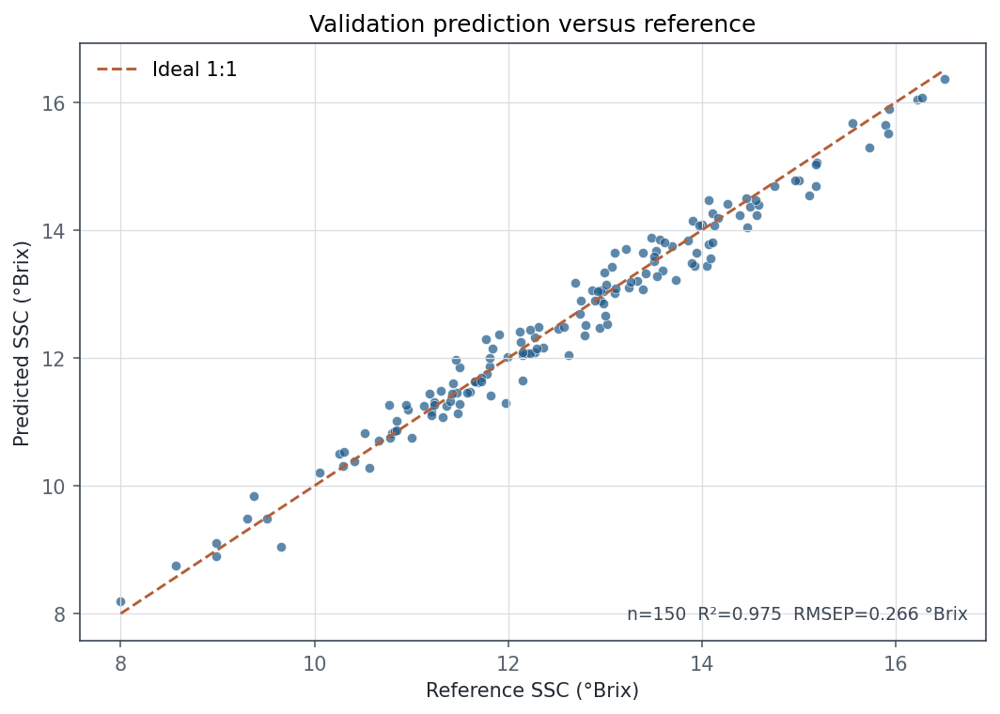
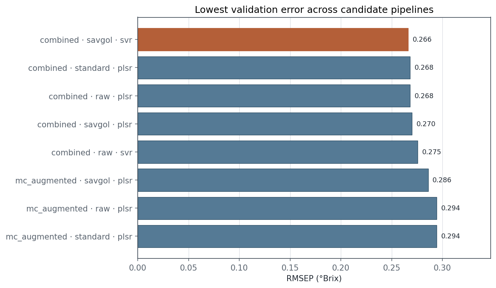

三维光学装置
Blender 几何 + Unity WebGL 交互光路；拖动旋转，滚轮缩放。
正在载入 Unity WebGL 仪器模型
仿真与数据图像
图像来自项目内已生成的物理仿真与合成数据 Run，可在左侧直接切换。
说明：吸收热力图和光子路径图用于解释模拟机制；它们不是苹果内部真实成像结果。数值结果需结合 Run manifest、能量审计和参数配置解读。
机器学习处理链路
从光学/光谱输入到验证集指标，展示处理步骤、数据隔离和模型结果。
正在读取 StageRun
结构化实验摘要加载中。
01 数据来源Run manifest 与光谱表
02 数据校验样本键、波长网格、单位
03 划分先划分，再拟合阶段方法
04 预处理Raw / SNV / SG→SNV
05 特征分析PCA 与 CARS 中间状态
06 建模SelectedFeatureSet → PLSR
07 结果RMSE、MAE、R²、样本数
最佳模型SVR
预处理SavGol
验证 R²0.975
RMSEP0.266
RPD6.31
验证样本150
预测值与参考值
验证集，虚线为理想 1:1；单位 °Brix。

候选流水线比较
按验证 RMSEP 排序，越低越好；仅展示前八项。

划分先于预处理验证样本不参与滤波器、缩放器或模型拟合。
目标不进入特征SSC 标签与特征矩阵分离，测试覆盖名称与列级泄漏。
结果边界这些指标来自合成教学数据，不作为真实苹果精度声明。
运行与审计
启动可重复 Run，观察命令确认、状态推进和事件重放。
运行数据写入服务器端 Run 目录；浏览器只显示状态和经过审计的结果入口。
Gatewayoffline
Sequence0
Stateidle
Stage-
Run path-
Waiting for Gateway…